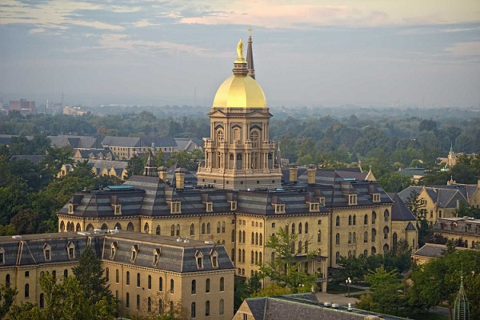
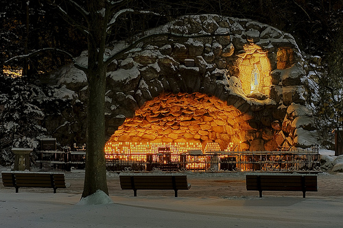
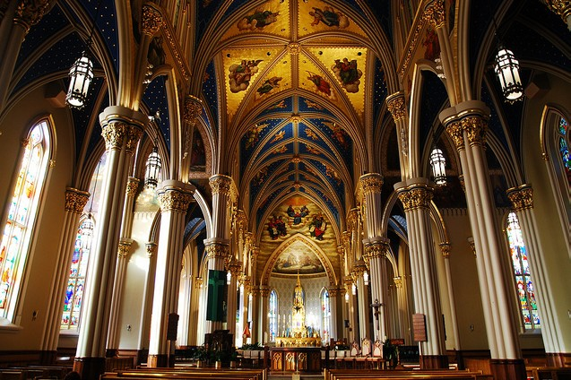
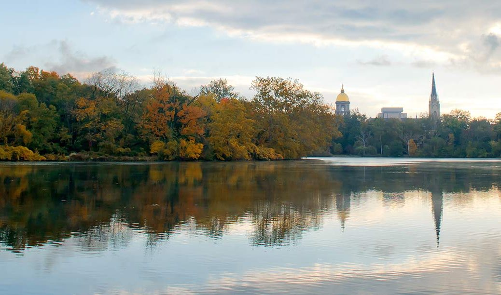
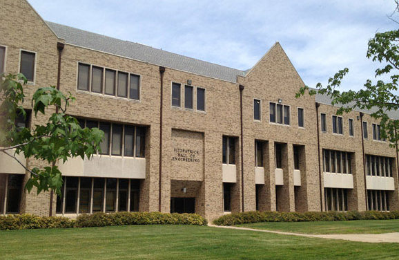
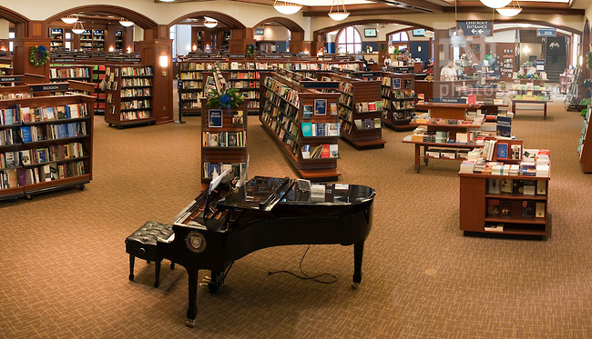
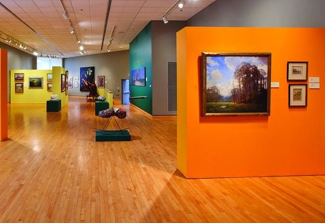

places to visit in South Bend
On Campus Landmarks
The Golden Dome
The Main Building, with its famous Golden Dome, centerpiece of Notre Dame’s past and present.
Our Lady's Grotto
A replica of famed French Shrine, the Grotto is a special place to spend a few quiet moments
Basilica of the Sacred Heart
Magnificent, Gothic-inspired, cross-shaped place of worship and welcome
St. Joseph and St. Mary's Lakes
On the northwest edge of the Notre Dame campus, St. Mary's Lake to the west and St. Joseph's Lake to the east serve as a park and nature preserve.
Other On Campus Attractions
Fitzpatrick Hall
Fitzpatrick Hall of Engineering has been our .
Hesburgh Library

14 storied Central Library building, with the famous "Touhc Down Jesus". Traditionally, an important gathering place for students on campus
Hammmes Bookstore
The bookstore, is a major campus destination for fans on football game-day weekends and a hub of good literature and camaraderie all year. The space is devoted to all sorts of reading material, including course texts and classics. There is also a café.
Attractions in South Bend

Chocolate Cafe

South Bend Art Museum
The South Bend Museum of Art features a full spectrum of historical and contemporary art featured in five galleries.